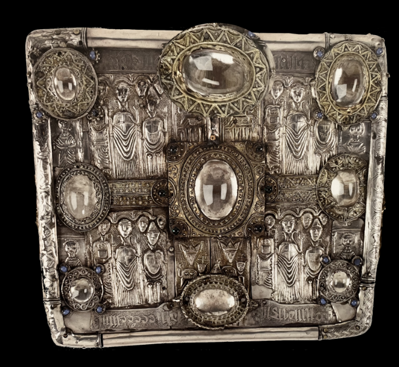

:: .05 ::
The rock pieces began falling into a depression. Andrew jumped back, grabbing Hector in total fear that they were about to fall down a sinkhole or an aquifer. But the rocks only fell 5 decimeters. When Andrew leaned forward and carefully moved the rocks, he found a small metallic case that looked like a purse.

They examined the case’s exterior, which was ornately decorated with relief figures and large gemstones. Before Andrew could tell Hector to not, Hector’s fingers found a clasp, which he opened.
Inside there were papyrus pages, which the two read.